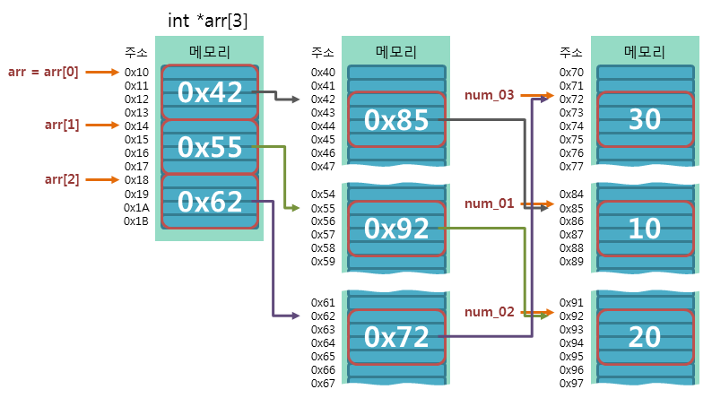
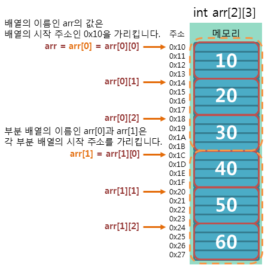

포인터 배열과 배열 포인터
포인터 배열
포인터 배열이란 배열 요소로 포인터 변수를 가지는 배열을 의미합니다.
즉, 포인터 변수를 저장할 수 있는 배열을 의미합니다.
다음 예제는 세 개의 int형 포인터 변수를 저장할 수 있는 포인터 배열을 선언하는 예제입니다.
예제
int i, arr_len;
int num01 = 10, num02 = 20, num03 = 30;
int* arr[3] = {&num01, &num02, &num03}; // int형 포인터 배열 선언
arr_len = sizeof(arr)/sizeof(arr[0]);
for (i = 0; i < arr_len; i++)
{
printf("%d\n", *arr[i]);
}
실행 결과
10
20
30
다음 그림은 위의 예제에서 사용된 포인터 배열이 메모리 상에서 어떻게 동작하는지를 보여줍니다.

배열 포인터
배열 포인터란 배열을 가리킬 수 있는 포인터를 의미합니다.
앞서 배열의 이름은 그 값을 변경할 수 없는 상수라는 점을 제외하면 포인터와 같다고 했습니다.
이렇게 배열 이름이 있는데도 따로 배열 포인터를 정의하여 사용하는 이유는 2차원 이상의 배열을 가리킬 때 포인터를 통해 배열과 같은 인덱싱을 할 수 있도록 하기 위함입니다.
즉, 포인터를 배열처럼 사용하기 위해서 배열 포인터를 정의하여 사용합니다.
따라서 배열 포인터는 1차원 배열에서는 아무런 의미가 없으며, 2차원 이상의 배열에서만 의미를 가집니다.

위의 그림에서 보면 2차원 배열의 배열 이름 arr는 부분 배열 arr[0]와 같은 곳을 가리킵니다.
2차원 배열의 배열 이름으로 포인터 연산을 하면 배열의 행 단위로 이동하게 됩니다.
즉, (arr+1)은 arr[1]과 같은 곳을 가리키게 됩니다.
다음 예제는 2차원 배열에서 각 부분 배열의 시작 주소가 가리키는 메모리에 저장된 데이터를 출력하는 예제입니다.
예제
int arr[2][3] = {
{10, 20, 30},
{40, 50, 60}
};
printf("%d\n", *arr[0]);
printf("%d\n", *arr[1]);
실행 결과
10
40
2차원 배열에서는 포인터 연산 시 증가하는 값이 행의 길이에 따라 차이를 보이게 됩니다.
2차원 배열의 행의 길이란 부분 배열의 크기를 의미하며, 다음 수식으로 구할 수 있습니다.
수식
sizeof(타입) * sizeof(arr[0])
다음 예제에서 포인터 연산 시 증감하는 값의 크기는 int형 타입의 크기인 4바이트에 배열 행의 길이인 3를 곱한 12바이트가 됩니다.
예제
int arr[2][3];
따라서 위의 예제에서 배열 이름 arr의 타입은 정확하게 다음과 같이 정의할 수 있습니다.
1. 배열의 이름 arr는 int형 데이터를 가리키는 배열 포인터입니다.
2. 이 배열 포인터는 포인터 연산 시 증감하는 값의 크기가 12바이트입니다.
따라서 위의 예제에서 배열 arr를 가리키는 배열 포인터는 다음과 같이 선언할 수 있습니다.
예제
int (*pArr)[3];
또한, 위 예제의 배열 포인터는 다음과 같은 배열들을 가리킬 수 있습니다.
예제
int arr01[2][3];
int arr02[ 3][3];
int arr03[ 4][3];
...
다음 예제는 배열 포인터를 사용하여 배열과 같은 인덱싱 방법으로 배열 요소를 참조하는 예제입니다.
예제
int arr[2][3] = // 배열의 선언
{
{10, 20, 30},
{40, 50, 60}
};
int (*pArr)[3] = arr; // 배열 포인터의 선언
printf("%d\n", arr[1][1]); // 배열 이름으로 참조
printf("%d\n", pArr[1][1]); // 배열 포인터로 참조
실행 결과
50
50
포인터 배열과 배열 포인터의 구분
앞선 예제의 배열 포인터에서 괄호(())를 생략하면 전혀 다른 의미가 됩니다.
예제
1. int (*pArr)[3];
2. int* pArr[3];
위의 예제 중에서 첫 번째는 int형 데이터를 저장할 수 있는 2차원 배열을 가리키는 배열 포인터입니다.
하지만 두 번째는 int형 데이터를 가리킬 수 있는 포인터 변수를 모아 놓은 배열을 가리키는 포인터 배열이 됩니다.
따라서 괄호의 유무가 중요하며, 포인터 배열과 배열 포인터 사이의 차이점을 정확히 이해하고 넘어가야 합니다.
main() 함수의 인수 전달
main() 함수는 프로그램이 실행되면 제일 먼저 자동으로 호출되는 함수입니다.
이러한 main() 함수도 함수이기 때문에 인수를 전달받을 수도 있고, 반환값을 가질 수도 있습니다.
C언어의 main() 함수의 원형은 다음과 같습니다.
원형
void(또는 int) main(int argc, char *argv[]);
C언어의 main() 함수의 첫 번째 인수는 int형 변수인 argc로 main() 함수에 인수로 전달되는 문자열의 개수를 명시합니다.
두 번째 인수는 char형 포인터 배열인 argv로 main() 함수에 인수로 전달된 각각의 문자열이 저장된 배열을 가리킵니다.